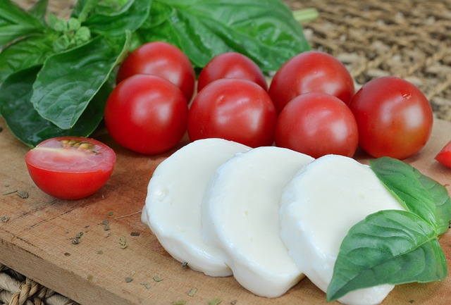

Kaas
Welke kaas komt uit Nederland?
Er bestaan heel veel soorten en indelingen van de harde Hollandse kazen. Het meest duidelijk is de indeling naar leeftijd: jonge, jong belegen, belegen, extra belegen, oude en overjarige kaas. Hoe langer de kaas rijpt, hoe droger en harder en voller en pittiger van smaak.
Vervolgens is er een traditionele benaming naar herkomst: Edammer, Goudse, Leidse en Friese kaas. Dit is veranderd naar een soortnaam, die een bepaalde vorm, smaak en kleur heeft.
Er zijn ook soorten kaas waarvoor andere soorten melk gebruikt zijn:
Graskaas: gemaakt van melk van koeien die het jonge voorjaarsgras hebben gegeten.
Boerenkaas: kaas gemaakt met rauwe melk volgens een traditionele en gecontroleerde bereidingswijze op de boerderij. Deze kaas is (half)hard en rijpt lang onder een lage zuurgraad.
Welke speciale kazen zijn er?
Voorbeelden van speciale kazen zijn:
Schimmelkaas, zoals brie, roquefort en camembert. Dit is kaas die gedurende de productie bewerkt is met schimmelsporen. De gebruikte schimmel is een Penicillium-soort, in een witte, groene of blauwachtige variant (blauwaderkaas).
Smeerkaas, die wordt gemaakt door water en smeltzouten aan gemalen kaas toe te voegen en dit te verhitten.
Kwark, dat is ongerijpte, verse kaas gemaakt van aangezuurde volle, halfvolle of magere melk. Aan Franse kwark is extra water toegevoegd om het geheel smeuïger te maken.
Verse (room)kaas, zoals hüttenkäse en mozzarella. Deze kazen zijn niet geperst en nauwelijks gerijpt. Verse roomkaas is gemaakt van melk waar room aan is toegevoegd.
Naar welke landen exporteren we kaas?
Driekwart van de Nederlandse kaas is bestemd voor het buitenland. Vooral Goudse kaas, Edammer en Maasdammer worden geëxporteerd. Het blijft vooral binnen de Europese Unie. Bijna de helft gaat naar Duitsland. Nederlandse kaas gaat ook naar landen buiten de EU, zoals Rusland, de Verenigde Staten en Japan.
Uit welke landen importeren we kaas?
Nederland importeert veel kaas uit het buitenland, vooral uit Duitsland, Australië en Nieuw-Zeeland. Kaas die in de winkel ligt als Franse kaas komt vaak gewoon uit Nederland. Echte Franse kazen worden op kleine schaal geïmporteerd.
Hoe wordt kaas gemaakt in Nederland?
Het grootste deel van de Nederlandse melk is bestemd voor fabrieken die kaas maken. De meeste kaas die je in de winkel koopt, is gemaakt van gepasteuriseerde melk. Gepasteuriseerde melk is kort verhit rond de 72°C om bacteriën te doden. Voor 1 kilo kaas is ongeveer 9 liter melk nodig.
Kaas ontstaat door stremsel aan melk toe te voegen. Het toevoegen van stremsel en zuursel maakt de melk dik. Er ontstaat wrongel en wei. Wrongel is een sponsachtige massa en wei is een dunne, waterige vloeistof.
De wrongel gaat in een vorm en wordt geperst. De geperste wrongel is onrijpe kaas. Deze gaat 1 tot 5 dagen in een pekelbad. Vervolgens rijpt het in een koele ruimte tot een stevige kaas. Voor een gelijkmatige rijping en om te voorkomen dat de kaas uitzakt, moet je jonge kaas elke dag keren. Naarmate de kaas veroudert, is dit steeds minder vaak nodig. Door de rijptijd te variëren, krijg je verschillende soorten kaas.
Een laagje plastic rond de kaas moet schimmels voorkomen. Daar overheen komt weer een laagje met schimmelwerend antibioticum. Schimmels worden ook tegengegaan door de kazen bij het keren te poetsen.
Vanuit het kaaspakhuis gaat de kaas in gekoelde vrachtwagens naar distributiecentra, winkels of fabrieken.
Hoe kun je kaas het beste eten?
Gekoelde kaas heeft minder smaak en geur. Haal de kaas ruim voor het eten uit de koelkast. Er is dan wel kans op zweten en sneller beschimmelen.
Het plastic laagje rond harde kaas is niet eetbaar, het beschermt tegen schimmels en bacteriën. Dat geldt ook voor roodschimmelkazen, zoals Port Salut. Bij witte korstkazen, zoals brie en camembert, is de korst wel eetbaar.

Bron: voedingscentrum.nl